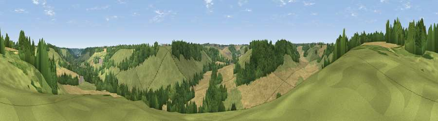

Viewpoint near Alkham
#39552 in England · top 64% of its area beats it · near Alkham · path 182 mWhere it is
The exact computed spot (TR 24075 41425). Click the marker for map links.
Public access: the nearest public right of way is about 182 m away — the final stretch may cross private land. Computed from Natural England's CRoW access layer and OpenStreetMap rights of way — not the legal definitive map. Always verify locally.
The view, rendered

A 360° render of this exact spot computed from the terrain model, tree cover and land cover — summer colours, afternoon light, calibrated against photographs of famous viewpoints. Real trees, hedges and buildings will differ in detail.
The panorama
Grey silhouette: terrain skyline in each direction (720 bearings, Earth curvature and refraction included). Dashed green: skyline with trees (+15 m) and buildings (+8 m) as obstacles. Blue strip: how far the ground is visible on each bearing.
Where the view opens
Wedge length = distance to the farthest visible ground on that bearing (vegetation-aware). Rings at 10, 25 and 50 km.
What fills the view
37% grassland · 34% cropland · 29% woodland
Angular shares of the visible panorama (visual magnitude), not map area. Landscape diversity 0.48 (0–1 Shannon).
Key numbers
More beautiful places nearby
The staircase of upgrades: each row has a higher view potential than everything closer. Driving times are estimates from straight-line distance, calibrated against real road routing — check an actual route before setting out.
| Place | Direction | Drive | Score |
|---|---|---|---|
| Viewpoint near Alkham | ESE · 1 km | ~3 min | 28.9 |
| Viewpoint near Old Hawkinge | SSW · 4 km | ~8 min | 76.9 |
| Viewpoint near Capel-le-Ferne | S · 4 km | ~9 min | 80.2 |
| Viewpoint near Willingdon | WSW · 77 km | ~101 min | 83.4 |
| Wilmington Hill | WSW · 79 km | ~103 min | 85.4 |
| Viewpoint near Alciston | WSW · 83 km | ~107 min | 85.8 |
| Viewpoint near Alciston | WSW · 83 km | ~107 min | 86.8 |
| Firle Beacon | WSW · 83 km | ~107 min | 88.9 |
51.12825, 1.20105 · source: screening · position refined by local search. Computed location — check access rights before visiting.